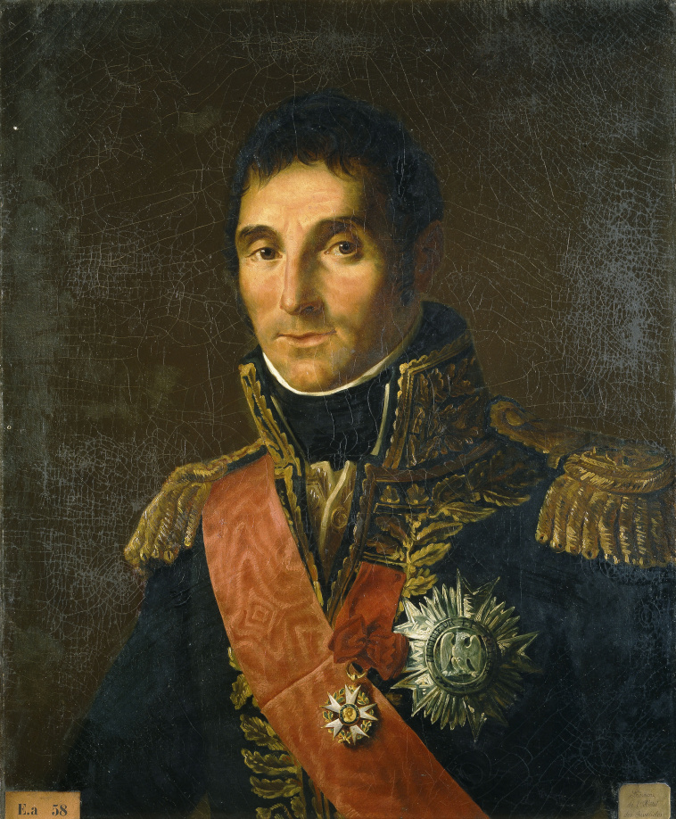
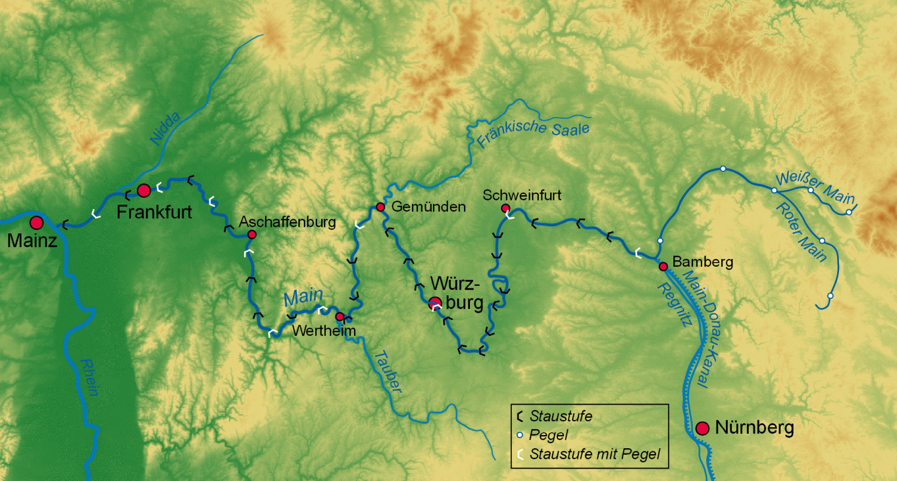
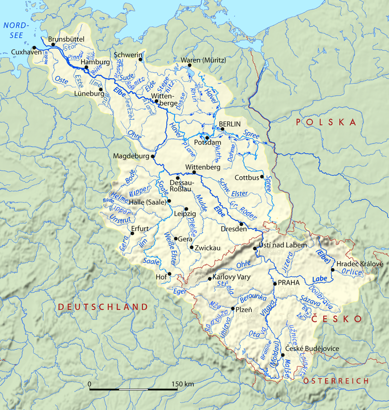
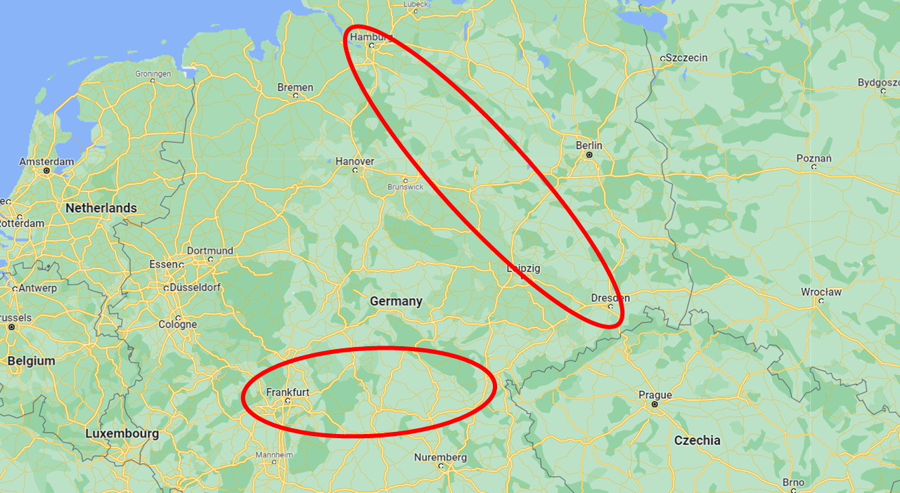
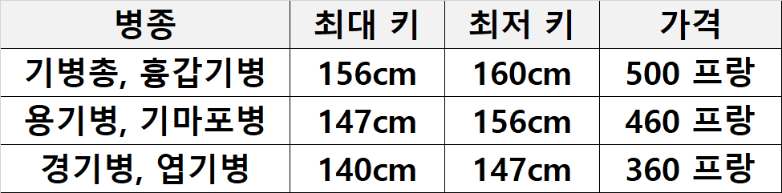
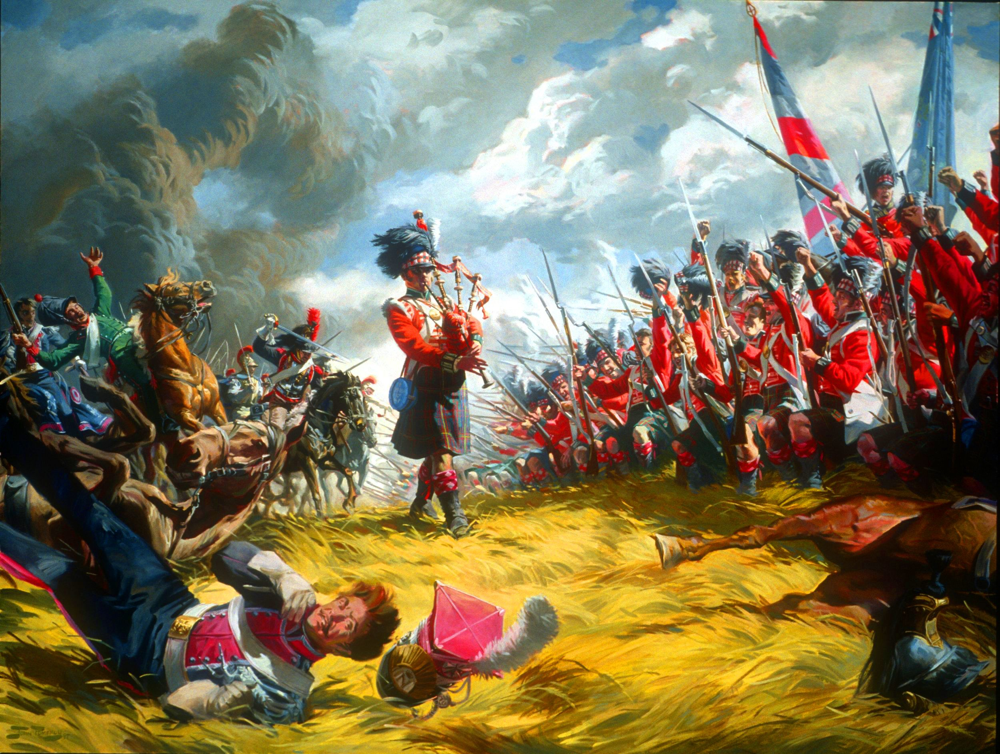
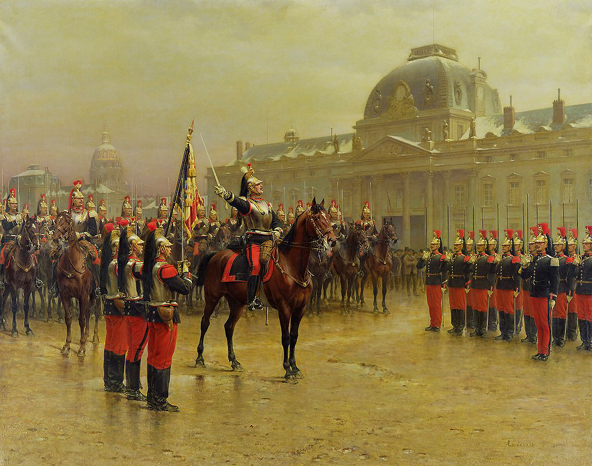

1813년 프랑스에는 말이 몇 마리나 있었나?
게시: 2022-05-16T06:30:42+09:00
나폴레옹은 새로 편성한 20만의 군대를 마인 방면군(Armée du Main)이라고 명명했고, 외젠의 지휘 하에 있던 기존 그랑다르메의 잔존부대를 엘베 방면군(Armée de l'Elbe)이라고 불렀습니다. 원래 나폴레옹이 군의 이름을 명명하는 것에는 나름 의미가 있었습니다. 나폴레옹은 방면군 이름을 정할 때는 그 군대가 작전을 펼칠 지역의 이름을 붙였는데, 그는 언제나 공격 위주였기 때문에 따라서 OO방면군이라는 것이 편성될 때는 아직 그 지역을 점령하기 전인 상태가 대부분이었습니다. 덕분에 일부 방면군은 그 이름이 붙은 지역을 끝내 제대로 장악하지 못한 경우도 있었습니다. 대표적인 경우가 포르투갈 방면군(Armée du Portugal)이겠지요.

(제가 포르투갈 방면군이라고 번역했지만, 저 초상화 속의 마세나가 1810년~1811년 동안 지휘했던 Armée du Portugal을 그대로 번역하면 그냥 포르투갈 군대입니다. 배경을 모르고 그냥 저 단어만 보면 포르투갈의 육군을 뜻하는 것 같지만 실은 정반대로 포르투갈을 침공하는 프랑스군을 뜻하는 것입니다. 원래 1er corps d'observation de la Gironde, 즉 지롱드 강 방면 제1 방어 군단이었으나 나폴레옹이 포르투갈 정복을 계획하며 부대 이름을 Armée du Portugal으로 바꾼 것에서 시작한 포르투갈 방면군은 이후 포르투갈에서 후퇴하여 스페인에 주둔하면서도 계속 그 이름을 유지했으나, 결국 1813년 7월 스페인 방면군을 재편성하면서 그 부대 이름이 비로소 사라졌습니다.) 나폴레옹이 외젠이 지휘하던 기존 그랑다르메의 잔존부대를 엘베 방면군이라고 부른 의도는 분명했고 크게 놀라운 일은 아니었습니다. 일단은 러시아군을 엘베 강에서 막아내라는 것이었지요. 그러나 새로 편성된 막강한 신규 편성군을 마인 방면군이라고 부른 것은 다소 의외였습니다. 마인(Main) 강은 밤베르크에서 프랑크푸르트로 이어지는 남부 독일, 즉 프랑스의 든든한 우방국인 바이에른과 헤센 지역을 흐르는 강입니다. 그러니 이번 전쟁에서 나폴레옹은 프랑스가 오스트리아나 러시아 등의 패권국가들로부터 가져야 하는 완충지대의 패권을 놓고 싸울 뿐, 결코 폴란드 수복까지 염두에 둔 것이 아니라고도 생각할 수 있습니다. 또는 적어도 적들이 그렇게 생각하도록 유도하기 위해 일부러 그런 이름을 붙였을 수도 있습니다.

(마인(Main) 강은 바이에른 북부를 흘러 라인 강에 합류하는 강으로서, 가장 유명한 도시는 프랑크푸르트입니다. 마인 강이 라인 강에 합류하는 지점에 위치한 도시가 마인츠(Mainz)입니다.)

(엘베(Elbe) 강은 체코에서 시작하여 함부르크에서 발트 해로 흘러 들어가는 강입니다. 외젠이 주둔한 마그데부르크도, 작센의 수도인 드레스덴도 모두 엘베 강에 면한 도시입니다. 원래 엘베라는 이름은 그냥 고대 독일어로 강이라는 뜻인데, 로마인들이 '이 강 이름이 뭐냐'고 묻자 게르만인들이 답하는 말을 듣고 Albis라고 적은 것에서 시작된 이름이라고 합니다.) 그러나 확실한 것은 나폴레옹이 새로 편성된 군대의 이름을 저렇게 붙였다고 해서 맨처음 염두에 두었던 기본 전략, 즉 북부 독일을 빠르게 가로질러 비스와 강 하구에 도달한 뒤 비스와 강을 따라 남진함으로써 러시아군의 배후를 노림으로써 러시아군의 철수를 유도한다는 작전을 포기한 것은 아직 아니었다는 것입니다. 나폴레옹이 저 이름을 붙였을 때는 아직 프로이센의 배신이 나폴레옹에게 알려지지는 않았거든요. 아마도 나폴레옹이 마인 방면군이라고 이름을 붙인 것은 그냥 그 출발지가 마인츠(Mainz) 일대였고, 그쪽에서 마인강을 따라 진격할 의도였기 때문일 수도 있습니다.

(나폴레옹이 명명한 군대 이름의 의미를 그대로 믿는다면 그 두 군대의 활동 무대는 저렇게 엘베 강과 마인 강 일대가 될 것입니다.) 다행인 점은 러시아군이 칼리쉬에서, 그리고 프로이센군이 브레슬라우에서 꾸물거리고 있었고 이 동안에 나폴레옹은 군의 편성을 완료할 수 있었다는 것이었습니다. 3월 12일, 나폴레옹은 외젠 지휘 하에 있던 엘베 방면군까지 포함하여 39개 사단으로 편성된 11개 군단, 총 30만의 편성을 발표합니다. 여기에 나중에 2개 군단을 추가 편성하여 나폴레옹의 새로운 그랑다르메는 총 13개 군단으로 구성되었는데, 사실 대부분의 군단들은 이미 기존에 존재했던 편제를 기반으로 했던 것이라서 인원과 장비만 채워넣으면 되는 것이었습니다. 그러다보니 프로이센군과는 달리 징집과 편성이 매우 빨라서, 실제로 4월 25일까지 무려 20만2천의 병력이 실전 배치 완료되었습니다. 특히 앞서 소개해드렸던 것처럼 프랑스 각지의 병기창들은 제 몫을 다하여, 이렇게 20만 대군에게는 머스켓 소총과 대포, 그리고 탄약이 부족하지 않게 충분히 공급되었습니다. 프랑스군이 누더기 차림으로 네만 강을 건너 서쪽으로 후퇴한지 불과 몇 달만에, 무려 800문의 대포와 2천대가 넘는 탄약수송차(caisson)들이 엘베 강변을 향해 동쪽으로 말을 달렸습니다. 그야말로 나폴레옹 제국의 저력을 보여주는 광경이었습니다. 그러나 나폴레옹도 어쩔 수 없었던 분야가 있었습니다. 바로 기병대였습니다. 1812년 러시아 원정에서 나폴레옹은 약 15만 필이 넘는 말을 잃었는데, 그 수를 다시 채우는데는 시간이 절대적으로 필요했습니다. 당시 프랑스에 말이 씨가 마른 것은 절대 아니었습니다. 군대를 재편성하면서 나폴레옹은 프랑스와 동맹국 전체 지역에서 말 사육두수를 조사했습니다. 1813년 2월 25일자 보고서에 따르면 그 숫자는 무려 350만 필이 넘었습니다. 그 중 숫말과 거세마가 120만 필이 훌쩍 넘었고, 암말은 거의 140만 필, 그리고 4살 이하의 어린 말들도 80만 필이 넘었습니다. 그런데 뭐가 문제였을까요? 생각 외로 말은 튼튼하다기 보다는 섬세한 동물이고, 말을 제대로 타기 위해서는 갖추어야 할 장비와 거쳐야 할 훈련이 엄청나게 많았습니다. 인간 청년들은 1달 동안의 기본 훈련만 받은 뒤 곧장 병사로 투입될 수 있었지만, 말은 무려 18개월에서 24개월 정도의 훈련을 거쳐야 승용마로서 사용될 수가 있었습니다. 그리고 일반적으로 군마는 적어도 4살이 되어야 완전히 성장했고, 일부 지방의 말은 좀더 걸려서 6살이 되어야 군에서 받아주었습니다. 그리고 흔히 영화 속에서 나오는 것과는 달리 승용마와 짐수레 말은 서로 훈련이 달라서, 안장을 채우고 사람을 태우던 말에 멍에를 씌워 짐마차를 끌게 할 수도 없었고 그 반대도 안 되었습니다. 군에서도 아무 말이나 막 받아주지 않았습니다. 가령 아래표를 보면 기병대의 병종별로, 군에서 받아주는 군마에는 나름대로의 규정이 있었습니다.

이 표를 보면 그냥 기병총 부대(carabiner)나 흉갑기병 부대(cuirassier)에는 큰 말이 배정되고, 상대적으로 경기병(hussar)이나 엽기병(chausseur)에는 작은 말이 배정되는구나 싶지만, 이 규정은 단순히 흉갑기병이 더 좋은 말을 탄다는 뜻이 아니었습니다. 말을 타려면 반드시 안장과 고삐 등 각종 마구를 갖춰야 했는데, 의외로 그런 마구들도 가격이 비쌌고 만드는데 시간이 걸렸습니다. 그래서 당시 군용 안장은 부대별로 모두 크기가 균일했습니다. 즉, 흉갑기병용 안장은 크게 만들었고 경기병용 안장은 작게 만들었기 때문에, 경기병 부대에 큰 말이 배정되면 안장을 얹을 수가 없어서 탈 수가 없었습니다. 더 적나라하게 말하자면, 말에 안장을 맞추는 것이 아니라 안장에 말을 맞추는 시스템이었습니다. 그래서 말이 기병대 훈련소에 입소하면, 처음에 엄격한 점검을 거쳐 규격에 어긋나게 너무 크거나 작은 말은 건강하더라도 되돌려보내야 했습니다. 물론 말을 탈 줄 아는 기병을 뽑는 것도 쉽지 않았습니다.

(1815년 워털루 전투를 겪은 사람들의 수기 중에서, 인상적이었던 장면 중에 이런 부분이 있었습니다. 영국군 보병들이 방진을 이루고 프랑스 기병들의 습격을 막아내는데, 보병 방진을 뚫지 못하고 주변을 뱅뱅 돌던 기병 하나가 총에 맞아 쓰러졌습니다. 그런데 총에 맞은 것은 말 뿐이라서 기병은 일어났고, 영국 보병들이 더 이상 총을 쏘지 않고 손짓을 하며 도망치라고 야유를 보냈습니다. 그러자 그 기병은 쓰러진 말에서 안장을 벗겨내어 어깨에 둘러매고 황급히 도망을 치더랍니다. 그때 안장이 비싼 것인 모양이라고 생각은 했는데, 저렇게 안장에 말을 맞출 정도로 안장이 중요한지는 몰랐습니다.)

(그림은 1887년 파리의 사관학교(Ecole Militaire)에서 의식을 치르고 있는 제6 흉갑기병 연대의 모습입니다. 놀랍게도 제1차 세계대전 때까지도 프랑스는 흉갑기병을 유지했습니다.)
그리고 당시 말은 엔진 그 자체였습니다. 많은 농장과 공장, 방앗간과 운하에서 밭을 갈고 짐을 나르고 배를 끄는데 말이 필요했고, 심지어 탄광에서 갱도에 차오르는 물을 퍼내는데도 말이 필요했습니다. 말이 3백만 마리가 있다고 해서 그걸 다 군대에서 쓸 수는 없었습니다. 그랬다가는 프랑스 경제가 그야말로 마비되었을테니까요. 사람과 비교해도 그렇습니다. 당시 프랑스 인구가 3천8백만인데 그 중 적어도 1천9백만은 남자일테니 병력 8백만은 충분히 뽑을 수 있겠다고 생각하면 곤란합니다.
그리고 말은 비싼 것이었습니다. 나폴레옹은 군마의 40% 정도만 구매하여 매입했고 나머지는 대부분 '자원마'로 받았는데, 이는 말이 자원일 뿐 사실상 징발이었습니다. 비싼 재산인 말을 가진 사람들은 대부분 중산층 이상 계급이었는데, 이들이 바로 나폴레옹 정권을 유지하는 핵심 세력이었습니다. 그런 사람들로부터 주요 자산인 말을 무한정으로 빼앗을 수는 없었습니다. 게다가 섬세한 짐승인 말은 전쟁터에서 계속 죽어나갔습니다. 그래서 기병대에는 당장 타고 있는 말 이외에도 말을 잃은 기병들을 위한 예비마가 끊임없이 필요했습니다. 나중의 일입니다만, 1814년 4월까지 1년 동안, 나폴레옹은 또 18만 필 이상의 군마를 잃습니다. 그 중 적에게 나포된 2만5천 필과, 규격에 어긋나거나 건강 등의 이유로 민간으로 반납된 2만7천 필을 빼더라도 약 13만 필의 말이 죽은 것입니다. 그런 예비마도 후방 기지에 준비하고 있어야 했습니다. 그러다보니, 4월 25일 실제로 모인 20만 대군 중에서 기병은 장교까지 포함하더라도 1만1천에 불과했습니다. 결국 러시아 원정때 말 귀한 줄 모르고 막 굴리다가 말들을 다 죽였던 것이 결국 나폴레옹에게 되돌아온 것입니다. 이렇게 시작된 기병의 부족은 나폴레옹을 결국 패망의 길로 몰아넣습니다.
그래도 이 정도면 프랑스군의 전쟁 준비는 굉장한 것이었고, 무기와 탄약 부족으로 곤란을 겪던 프로이센군의 상태와는 무척 대조되는 것이었습니다. 까딱하면 일부 부대는 창과 도끼로 무장시켜야 할 판이었습니다. 그런 상황을 구해준 것은 제 코가 석자인 러시아군은 아니었고, 같은 독일어를 쓰는 오스트리아도 아니었습니다. 바로 영국이었습니다.
Source : The Life of Napoleon Bonaparte, by William Milligan Sloane Napoleon and the Struggle for Germany, by Leggiere, Michael V
https://fr.wikipedia.org/wiki/Arm%C3%A9e_du_Portugal https://en.wikipedia.org/wiki/Main_(river) https://en.wikipedia.org/wiki/Elbe https://www.napoleon-series.org/military-info/organization/France/Cavalry/Remounts/c_remounts1813.html
https://en.wikipedia.org/wiki/6th_Cuirassier_Regiment_(France)
https://www.pinterest.co.uk/pin/napoleonic-war-art--322077810850694324/